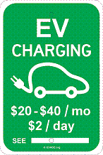
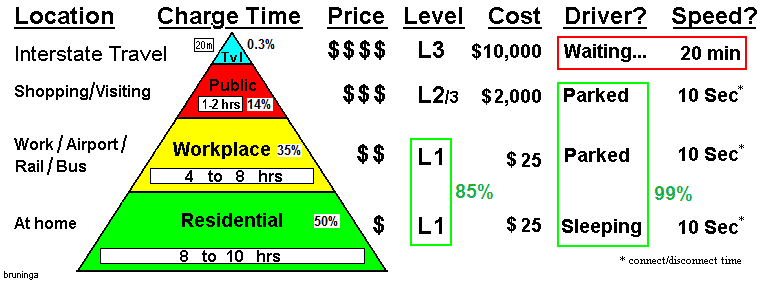
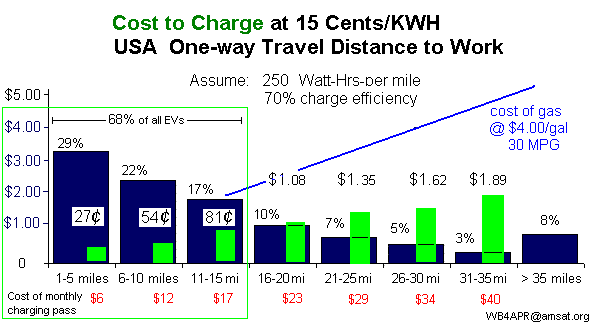

Charging-at-Work!
APRS Spider Charger
Bob Bruninga, PE
IEEE National Committee on Transportation and Aerospace
Electric Vehicle Association of DC
wb4apr at amsat dot org
This page offers a practical DIY approach to very low cost Charging-at-work.
This approach addresses most of the subtle nuances to date that have hendered practical charging at work.
It does this simply by adding a sharing mechanism to a low-cost EVSE so that a single L2 charging station
can be shared between from 3 to 10 vehicles while parked so that they do not have to be moved during the day.
Further, it operates on
any existing single 20 amp 240v circuit without any special wiring! The entire spider charger and all
charge cords may use simple #12 AWG wiring like any 20 amp circuit. We call it the
Automatic PRogrammed Spider Charger or APRS Charger.
The number of
vehicles per charging station can be from 2 to 10, depending on the application. Remember, this
arrangement only makes sense for charging at work, where all participating cars are parked
all day (8 or 9 hours) and simply want to replenish their mileage to work for the trip home or afternoon errands.
The 9 hour cycle repeats continuously so that shift workers also are guaranteed to get their alloted
time too.
Number of Cords Shared: The at-work APRS Spider Charger shares the J1772 charging cords
equally over a continuous repeating 9 hour cycle. If there are three
cords, then each car gets 3 hours charge. If there are 6 cords, then each car gets 90 minutes and so forth.
To allow this Spider Charger to use existing 20 amp circuits, it uses a 3.3kw 240 volt EVSE. This limits
charging to 16 amps and generally, all cars can gain about 11 miles per hour of charge on such a charger.
This fixed charge rate then makes it easy to determine the mileage gained per car and the cost to charge
as follows:

2 cords - 4 hours 30 minutes - 50 miles each - $50/mo*
3 cords - 3 hours 00 minutes - 33 miles each - $33/mo
4 cords - 2 hours 15 minutes - 25 miles each - $25/mo
5 cords - 1 hours 45 minutes - 18 miles each - $18/mo
6 cords - 1 hours 30 minutes - 16 miles each - $16/mo
9 cords - 1 hours 00 minutes - 11 miles each - free**
* Employee Payment System: The above costs are for a utility rate of 14 cents per kWh as it is here
in Maryland and conveniently work out to about $1 per month per daily commute mile. Employers
sell a monthly charging pass as shown here so that employees can display the pass to
show fellow workers that they have paid for this privilage and are not taking a free ride. This also
makes it easy to enforce, since every car in these spots and plugged in will be displaying the
charging pass. And since the main value promise of Electric Cars is cheap, emission free commuting,
the same cars will be using the same charge cords everyday and there is no potential for "charge-and-run"
since it takes sitting their all day just to get about $1 of electriciy anyway!
The price per month at other rates are proportional.
** Park&Rides: The 9 cord example is probably not practical in an at-work situation, but it is ideal as a
public transit incentive in State and County owned Park&Ride lots. The cost to the state per
commuter is about 40 cents a day which is a bargain incentive to ease congestion on the
roads compared to existing cash incentives as much as $6 a day given to commuters to ride the bus.
Besides, eventually there will be low cost, short range EV's ideal for use as nothing more
than an emission free way to get to the Park&ride. To encourage the use of such low-cost, emission
free transportation to the park&Rides and then mass transportation to work, offering 10 miles of
free charging can be a great incentive.
See the EV Park&Ride Charging Initiative
Mechanical Considerations: In the example above, three cords are mounted on the original EVSE
enclosure and the other 3 are mounted on a different Auxilliary post. This combination can serve
6 adjacent parking spaces. In some lots with Islands, the 3 auxilliary cords can be mounted back
to back on the same pole and easily reach 6 spaces with 30 foot cords. These cords are lightweight
since this system only charges at 3.3kW which is more than adequate for these daily commuters.
Multiple Range Options: Since many EV drivers have different commute range requirements,
a good installation plan would install a variety of APRS Spider chargers. A few 3 or 4-cord stations
for those commuters with longer commutes and then a row or two of 6-cord stations for
the majority of employees with the more typical 16 mile 70th percentile national average commute. As noted before,
there is a point of deminishing returns for larger numbers of cords, since most EV drivers would
not bother to plug-in at work for only a 10 mile commute (unless the electricity was free, such
as the Park&Ride example above).
The APRS Spider Charger solves most of the EV Charge-at-work issues as described here:
High cost of Chargers - Amortized over the number of APRS Spider cords
High cost of installation - Runs on a single #12 20 amp circuit
High cost of wiring - Can be hooked to an existing 20 amp circuit switched to 240v
High impact on the Employers peak power and on the grid - N/A: only one car charged at a time
Inefficiency of L2 chargers usually blocked by a fully charged EV - N/A: each car gets its charge without moving
Hourly L2 Requirement to play musical cars in the parking lot - N/A: each car gets its own cord
Internet conectivity and metering costs - N/A: Daily costs are fixed and paid by the month
EV hostility from other employees - N/A since EV drivers pay for the privlige and display it
Inconvenience of using one's own 120v EVSE every day from the trunk - N/A: J1772 cord provided
Vulnerability of owners 120v EVSE to theft in some work places - N/A: J1772 cord permanent

 The EV Charging Pyramid: The #1 opportunity for EV charging away from home
has always been charging-at-work as shown here in the charging pyramid.
Although more than 97% of EV charging at work can be satisfied with
simple L1 charging as we have noted in numerous writing and as supported by the Maryland
EV Infrastructure final report (at right), the problem has not been the availability of 120v outlets, but the
inconvenience of using one's own charge cord from the trunk every single day. The employer cannot
easily install an EVSE for every driver due to the typical $600 to $900 cost per cord, and going to the
trouble of installing anything, one may as well install L2 chargers. But L2 chargers at work are impractical
due to the need for hourly sharing. The APRS Spider Charger solves all these problems!
The EV Charging Pyramid: The #1 opportunity for EV charging away from home
has always been charging-at-work as shown here in the charging pyramid.
Although more than 97% of EV charging at work can be satisfied with
simple L1 charging as we have noted in numerous writing and as supported by the Maryland
EV Infrastructure final report (at right), the problem has not been the availability of 120v outlets, but the
inconvenience of using one's own charge cord from the trunk every single day. The employer cannot
easily install an EVSE for every driver due to the typical $600 to $900 cost per cord, and going to the
trouble of installing anything, one may as well install L2 chargers. But L2 chargers at work are impractical
due to the need for hourly sharing. The APRS Spider Charger solves all these problems!
Employer Utility and Grid Impact minimized: The beauty of the APRS Spider Charger is the ideal
load leveling it applies to the employers electrical system and the grid. The impact of any
APRS Spider Charger is no more than a single EV, no matter how many Spider Cords are provided.
And the impact of all of these EV's charging is no more than about 3 coffeepots. And the load remains
constant throughout the day so that it cannot cause any peak-demand charges on the employers
utility bill.
APRS Spider Charging the same as L1: Notice that the benefit to the employee for APRS Spider
Charging is about the same as L1 charging. Both accomplish about the same range of charging and both
spread the charging out over the full work day. The difference is that with APRS Spider charging,
the employer is conveniently providing the J1772 cords instead of each employee having to fuss with
his every day. Also, the programmed timing of the APRS SPider chargers assures everyone gets their
allotted charging mileage every day while maintaing a constant load on the grid. Although L1 charging
can be as little as 1/5th of the load of a typical L2 charger, there is no control over the load and
usually all cars will plug in at once in the morning leading to a small peak and then a taper all day
long. But the APRS Spider charger applies a constant one-car load throughout the day.
The problems with L1 charging is the vulnerablilty of the Drivers own EVSE:
The images below say without words the reason the L1 charging-at-work in some
less secure areas may not be as practical
as it may appear:
.
.
.
 .
.
.
.
.
.
.
.
.
.
THE REMAINDER OF THIS PAGE HAS NOT BEEN EDITED YET AND IS A CARRY OVER FROM OTHER PAGES
See the DOE's
Workplace Charging Challenge
Notice the DOE
Does Allow EV Charging
in their facilities. See
details.
See why the GAO prohibition on EV charging in the Capitol Area does not apply
See Powerpoint on EV misconceptions.
See
NPR interview by Jessica Gould or
hear it (2 mins).
See EV speech at Driving Maryland Green 11 Oct 2012
Download IEEE Paper on L1 Charging. Provides supporting justification for this concept.
Other Related Pages:
See EV Misinformation Page. Most that you hear about EV's is wrong
See successes with 120v Charging in the Central Maryland area
Download a Charging OUTLET sign or a Charging STATION sign.
Charging at Park-N-Rides the common sense approach!
Building a DIY Charge cord for 120v for under $100
EV Charging, Payin-to-Plugin at US Naval Academy
Federal, State, City and Corporate authorzation for EV charging at work
Parity between EV Road Tax and Gas Car Environmental Tax
Get the Charging-at-work Presentation from the DC EV Forum 12/12/11.
Download the EV Position Paper
on Charging Infrastructure
Monthly Pass: For employee parking, the authorized EV owner employee plugs into any convenient
120 VAC outlet in the garage or lot. No special chargers or installation is required.
A few such existing exterior 120 volt standard outlets can usually be found on
most facilities everywhere (at least equal to the number of EV's that work
there for the next few years!). If not, they should cost little to install.
See photo at upper right.
Simple Signage on Existing 120v Outlets will accomplish FAR MORE than the $50 Million
government rebates being offered for the installation of expensive
level-2 quick chargers which are not needed at home (8 hours sleeping)
or work (8 hours working) for employees. This 120 volt charging at work
can almost double the effective commute range of EV employees.
Expensive L2 Quick chargers at work are generally idle 83% of the time! (see analysis below)
because cars charge in an hour or so and then sit idle.
Managers do not want employees going to the parking lot every
hour to play musical chairs with their cars to share a few expensive L2 chargers
that can fully replenish an average commuter EV in under an hour! . . . Let them
plugin to any 120v outlet the full 8 hours and get the same charge instead.
 The Employer/Employee relationship already exists for pay-as-you-go coffee messes,
and here the employee's Electric car plugged into a 120v outlet
is drawing no more power than a coffee pot. In addition, he/she
is even willing to fully pay for the electricity up-front.
The Employer/Employee relationship already exists for pay-as-you-go coffee messes,
and here the employee's Electric car plugged into a 120v outlet
is drawing no more power than a coffee pot. In addition, he/she
is even willing to fully pay for the electricity up-front.
The cost for 21 workdays a month of 8 hours of electricity from any standard 120 volt
15 amp circuit to make up for an incoming commute is shown in the figure below right. Nearly
70% of all commuters would use less than 81 cents a day while charging at work.
Employees are able to purchase monthly charging passes based on their home-of-record distance
to work. Using an electirc rate of 15 cents per KWH then $20/month would cover 70% of all commuters
driving under 16 miles to work, and $40/month would cover the serious 32 mile trip to work by a Leaf or other road-warrior commuter as shown in this plot of commute distances and percent drivers.
Maybe $5/mo would cover for an electric Motorcycle and $2/Mo for an electric bike.
And this simple system cannot be abused!

Power drawn is Self-Limiting. This arrangement cannot be abused since an EV
simply cannot draw more than about $1.80 a day from a 120 volt 15 amp outlet
during an 8 hour day. Any more current and the 15 amp breaker will trip.
If one tries to stay plugged in for say 16 or 24 hours to
draw more government/company electricity than he has pre-paid, he runs up against
the problem of a full battery! Once his car's battery is fully charged
(which for 2/3rds of all EV's is under 4 hours) then no more power can be
drawn from the outlet! Assuming the EV owner always charges up at home the night before,
then the charge time at work on a 120v outlet is directly proportional to his one-way
distance to work as shown in the next graphic to the right.
Charge less than 2 hours - 40% of commuters (8 mi to work)
Charge less than 4 hours - 70% of commuters (16 mi to work)
Charge less than 6 hours - 85% of commuters (24 mi to work)
Charge less than 8 hours - 90% of commuters (32 mi to work)
This is SIMPLE and NO COST. Enough
outlets EXIST NOW for the next year or so. Just say YES and let us Payin-to-Plugin.
We must get off foreign oil ASAP and show how easy it is to commute in an EV.
 For Example, I've been trying for over a decade to get permission to pay-for and plug into the outlet
sitting right there within 6 feet of my car parking space at work (see photo at top).
But no one in the government can figure out how to take my 50 cents a day and grant that authority.
Maybe a simple sign will do it...
For Example, I've been trying for over a decade to get permission to pay-for and plug into the outlet
sitting right there within 6 feet of my car parking space at work (see photo at top).
But no one in the government can figure out how to take my 50 cents a day and grant that authority.
Maybe a simple sign will do it...
Range Anxiety and Public Charging Infrastructure: There is too much
hype and media hand wringing over EV range. Over 67% of ALL Americans live in single family
detached homes. This means that over 205 MILLION car owners already have an EV
charging point at home (any 120v outlet) and all they need is an outlet at work
to charge during the 8 hours the car is parked there.
And we don't need a $6000 quick charger installation to do it!
L1 Time to Charge:
An 8 hour overnight or charge-at-work can replenish a 32 mile trip to or from work
in under 8 hours. The expensive L2 Quick charger can do it in 2 hours but is not needed
by most commuters during the 8 hours of sleep and the 8 hours of work!
Talking Point: Level 1 standard 120v outlets at-work can fully charge over 90% of all commuters! (see L1 chart at right).
.

Focus on the Benefits: Instead of focusing on how long it takes to fully fill an EV
battery from L1 home charging, we should instead focus on how many miles-per-charge we get
during an 8 hour charge at Home and at work. Since any EV will gain about 32 miles of charge
during 8 hours on a standard outlet, that can give EV's that charge at work a total daily range of 64 miles - more than a single charge can do in a Volt for example.
 If your L1 Outlet trips on your EV: Some home/outdoor GFCI outlets are very old and do not meet
the more recent specs that are less sensitive to transients. If your old GFCI outlet trips when you plug
in your EV, consider replacing it with a GFCI Designed specifically for EV charging as shown to the right.
They are readilly availble on line from from Home Depot.
If your L1 Outlet trips on your EV: Some home/outdoor GFCI outlets are very old and do not meet
the more recent specs that are less sensitive to transients. If your old GFCI outlet trips when you plug
in your EV, consider replacing it with a GFCI Designed specifically for EV charging as shown to the right.
They are readilly availble on line from from Home Depot.
LEVEL-1 CHARGERS AT WORK: Enabling the use of 120v standard outlet Level-1 chargers
at work should be the #1 goal of EV Infrastructure roll-out in the USA. As shown at right,
installing level-2's is an 83% waste of resources. However, enabling the use of 120v outlet
charging (Level-1) can meet the charging needs of 92% of all USA commuters with EV's and
still use less than half the Level-1 charging capacity! As shown here, these 90% of all EV commuters
simply plugged into a 120v outlet at work, would leave work fully charged in under 8 hours.
One Million EV's by 2015:
If you think 1 Million EV's is a small number, remember, there are over 400 different models
of gas cars being sold by 45 manufacturers to meet the broad distribution of
public demand for vehicles that match their personal need.
Even the #1 selling gasoline vehicle in America (Ford F150 pickup truck) only sells to 4% of Americans!
And, by the way, it costs more than the Volt or the Leaf!
If only 1% of drivers bought an EV, that would be 3.5 million EV's!
Since 67% of ALL drivers already have an L1 charger port at home (120 VAC outlet), this
simple proposal to provide L1 outlets at work would INSTANTLY DOUBLE THE RANGE of
every EV in the hands of commuters and at NO COST to taxpayers.
Even Convenience stores are
installing 120v charging outlets.
Double the Range: This is truly a no-cost program that will revolutionize the progress towards
electrification of transportation and its concomittant environmental and economic benefits
by doubling the range of EV's for commuters and employees. It can also demonstrate to other large
Company facilities the benefits of such an approach on their campuses. Charging at home and at work
constitutes 70% of the charging pyramid as shown below.
120v OUTLETS AT WORK CAN MEET 97% OF THE NEED!
Too many bureaucrats and employers are too focused on the expensive Level-2 and L3
EV quick charging stations (which is only 3% of the charging-at-work need as shown
here to the right). They focus on
public EV charging infrastructure (only the tip of the triangle above)
as a way to combat Range Anxiety which in effect only adds to range anxiety by
continuing the gas-tank/gas-station legacy thinking. This emphasis on
charging
speed is completely misplaced. At every level of the charging pyramid,
except the top 0.3%, charging is not
a separate go-to process but is just an added 5 seconds on the parking process.
The only place where
EV charging speed is paramount is along the interstates, where the only reason for being there is to
charge and charge fast to get from point-A to point B.
Every other level of the charging pyramid (the other 99%)
is simply charging conveniently while parked. And when you are parked for 4 hours or more,
120v standard outlet charging will satisfy nearly 97% of the charging-at-work or at least 69%
of all charging-away-from-home need.
Park at-work, Plug-in at work and double your range!
As shown at right, Even the Maryland EV Council agrees that over 97% of all charging-at-work
can be met with simple 120v outlets!
L2 Chargers at work are ineffective: The expensive high-cost Level-2 quick chargers at work locations and campuses makes little sense for the employee or employer.
Employers are not going to want
their people doing musical-chairs in the parking lot every hour and rotating one EV off the
charging station, and then rotating another one in its place?
No. We need 120v convenience outlets on every lamp post and in many cases they already exist.
We simply need the means
for EV owners to pre-pay for the electricity with a Monthly Charging Pass
so that then they get permission to plug in.
Payin-to-Plugin SUMMARY:
The Level-1 120v outlets exist, or can be installed at minimal cost. Lets go for the low hanging fruit
with respect to EV charging and enable the existing 120v outlets scattered around first. Writing a letter
to every Garage, hotel, apartment, condo, church or Bar owner that has existing 120v outdoor outlets can jump-start EV acceptance overnight at no cost.
You can also download
a condensed one-page(f/b) summary handout of this web page (see top of page).
Download a 1 page paper on this tax topic.
Bob Bruninga
IEEE National Committee on Transportation and Aerospace
EV Association of DC
wb4apr at amsat dot org
See also the page on Payin-to-Plugin for easy use of 120v outlets at work.
See also the page on EV and Gas Road and Environmental Use Taxes maintaining Parity
See also my Solar PHEV, a work in progress...
{kind=link}
{kind=link}